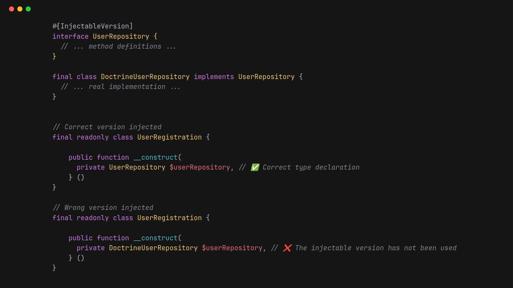

March 3rd 2026

Dependency Injection is an important design pattern that is widely used in the PHP community. It helps developers write loosely coupled that is easier to test.
Suppose we have a UserRegistration service that depends on a UserRepository.
The UserRepository is passed to the UserRegistration service via its constructor.
Often dependencies are expressed in terms of an interface or abstract class, rather than the concrete implementation.
In this example we might have a UserRepository interface and a couple of implementations.
The real implementation DoctrineUserRepoistory and a InMemoryUserRespository for testing.
We need to ensure that the UserRegistration's __construct method has the correct type.
In this case UserRepository and not one of the implementations.
To do this we'd mark the UserRespository with the #[InjectableVersion] attribute.
Our code looks like this:
#[InjectableVersion]
interface UserRepository {
// ... method definitions ...
}
final class DoctrineUserRepository implements UserRepository {
// ... real implementation ...
}
final class InMemoryUserRepository implements UserRepository {
// ... test implementation ...
}
Using UserRespository as the type declaration in UserRegistration is correct:
final readonly class UserRegistration {
public function __construct(
// ✅ Injectable version used
private UserRepository $userRepository,
} ()
}
Using one of the implementations is incorrect:
final readonly class UserRegistration {
public function __construct(
// ❌ The injectable version has not been used
private DoctrineUserRepository $userRepository,
} ()
}
In the case where no classes or interfaces in the class hierarchy are marked with InjectableVersion, no errors will be reported.
Given the following:
class Foo {}
class Bar extends Foo {}
No issues would be reported here:
final readonly class MyService {
public function __construct(
Foo $foo,
Bar $bar,
) {}
A good rule of thumb is that dependencies should always be injected via the constructor.
That said frameworks like Symfony allow dependencies to be injected into controller methods.
final class PersonController {
#[Route("/people")]
public function list(
UserRepository $userRepository,
): Response {
// ... implementation ...
}
}
If we want to ensure that the InjectableVersion is used on methods add the #[CheckInjectableVersion] to the method.
This is correct:
final class PersonController {
#[CheckInjectableVersion]
#[Route("/people")]
public function list(
UserRepository $userRepository, // ✅ Injectable version used
): Response {
// ... implementation ...
}
}
And this will be marked as an error:
final class PersonController {
#[CheckInjectableVersion]
#[Route("/people")]
public function list(
DoctrineUserRepository $userRepository, // ❌ The injectable version has not been used
): Response {
// ... implementation ...
}
}